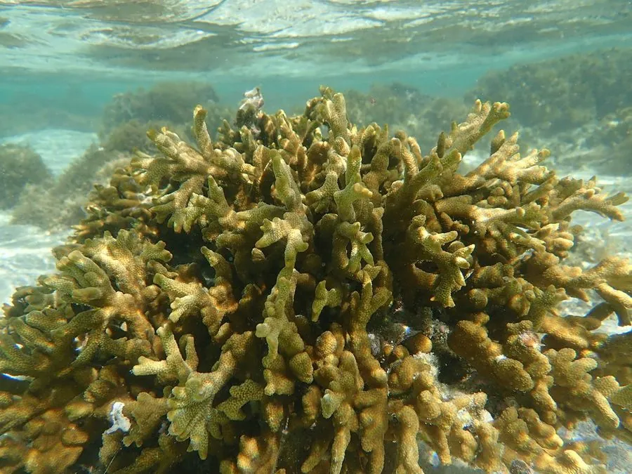

其他无脊椎动物 · 动物界
多孔蔷薇珊瑚 Montipora digitata

群体呈指状分枝、表面密布细孔的石珊瑚，与虫黄藻共生，是热带礁区生长较快的造礁珊瑚，对升温敏感。
- 分类
- 门刺胞动物门纲珊瑚虫纲目石珊瑚目科鹿角珊瑚科属蔷薇珊瑚属
- 栖息环境
- 热带珊瑚礁潮间带下区至水深二十米的礁坪、礁坡和潟湖
- 地理分布
- 印度洋至西太平洋热带珊瑚礁，包括中国南海、日本南部、菲律宾与澳大利亚大堡礁
- 保护级别
- 尚无专门保护级别；对海水升温敏感，热浪时易大面积白化
物种志
多孔蔷薇珊瑚的群体由许多直立或斜伸的指状分枝组成，分枝圆柱形，末端钝圆，高度可达二十厘米。它的骨骼表面密布细小的孔洞，每个孔里居住着一只水螅体，孔口周围有细密的刺状突起，多孔之名由此而来。活体表面覆盖一薄层共肉，颜色多为淡褐、黄褐、淡紫或蓝紫，分枝顶端常呈淡色或荧光色。
它分布于印度洋至西太平洋的热带珊瑚礁海区，包括中国南海、日本南部、菲律宾、印度尼西亚和大堡礁，栖息在潮间带下区至水深二十米的礁坪、礁坡和潟湖，喜欢光照充足、水流中等的位置。它体内共生虫黄藻，靠光合作用获得主要能量，同时捕食浮游动物。它是雌雄同体或雌雄异体的造礁珊瑚，繁殖期在春夏，幼虫浮游后附着变态，生长速度在石珊瑚中较快。它对海水升温非常敏感，热浪来临时容易大面积白化死亡，目前尚无专门的保护级别，但珊瑚礁整体受气候变化和海水污染威胁。
形态与习性
- 群体由指状分枝组成，高可达二十厘米
- 骨骼表面密布细孔，孔口周围有刺状突起
- 颜色淡褐、黄褐、淡紫或蓝紫，枝端偏淡
- 共生体内共生虫黄藻，靠光合作用供能
- 栖息水层潮间带下区至水深二十米的礁区
- 威胁对海水升温敏感，易发生白化
趣味知识
- 它的分枝像一根根竖起的手指，表面却密布着针尖大的小孔。
- 它是造礁珊瑚里长得较快的种类，几年就能铺开一片。
- 海水一升温，它会先变白，再整片死去，是气候变化的敏感指示者。